OAT 3 - Sourcespace Analysis
This practical will work with a single subject's data from an emotional faces experiment (Elekta Neuromag data).
Work your way through the script cell by cell using the supplied dataset. As well as following the instructions below, make sure that you read all of the comments and understand each step as you go.
We will estimate neural activity in the brain's source space using a beamformer algorithm, task dependant differences in this source activity is then quantified using a GLM. This will go through the following steps:
- Set-up an OAT Analysis: source_recon and first_level
- Run source space GLM fitting and contrasts
- Check coregistration
- Save and view t-stat volumes
- GLM analysis in an ROI
- Time-frequency analysis in an ROI
- Whole brain time-frequency analysis
This practical requires the first part of the osl_example_coregistration practical to be run first. If you haven't run this before, please do so before starting this session.
Contents
- INITIALISE GLOBAL SETTINGS FOR THIS ANALYSIS
- SET UP THE SUBJECTS FOR THE ANALYSIS
- SETUP THE OAT:
- SPECIFIY FIRST LEVEL OPTIONS
- RUN THE OAT:
- VIEW OAT REPORT
- OUTPUT SUBJECT'S NIFTII FILES
- OPEN NIFTII RESULTS IN FSLVIEW
- INVESTIGATING LOCATION OF INTEREST USING AN MNI COORDINATE
- INVESTIGATING REGIONS OF INTEREST USING AN MNI MASK
- TIME-FREQUENCY ANALYSIS ACROSS A SOURCE-SPACE PARCELLATION
- LOAD PREVIOUSLY RUN OAT
- VIEW THE RESULTS IN THE OAT REPORT
- SOURCE ROI TIME-FREQUENCY PLOT
- SOURCE ROI SINGLE-FREQUENCY POWER PLOT
INITIALISE GLOBAL SETTINGS FOR THIS ANALYSIS
This cell sets the directory that OAT will work in. Change the workingdir variable to correspond to the correct directory on your computer before running the cell.
% directory where the data is: datadir = fullfile(osldir,'example_data','faces_singlesubject_example','spm_files'); structdir = fullfile(osldir,'example_data','faces_singlesubject_example','structurals'); % directory to put the analysis in workingdir = fullfile(osldir,'example_data','faces_subject1_data_osl2');
SET UP THE SUBJECTS FOR THE ANALYSIS
Specify a list of the fif files, structural files (not applicable for this practical) and SPM files (which will be created). It is important to make sure that the order of these lists is consistent across sessions. Note that here we only have 1 subject, but more generally there would be more than one. For example:
fif_files{1}=[testdir '/fifs/sub1_face_sss.fif'];
fif_files{2}=[testdir '/fifs/sub2_face_sss.fif'];
etc...
spm_files{1} = [workingdir '/sub1_face_sss.mat'];
spm_files{2} = [workingdir '/sub2_face_sss.mat'];
etc...
% clear old spm files clear spm_files_continuous spm_files_epoched spm_files_continuous{1}=fullfile(datadir,'Aface_meg1.mat'); spm_files_epoched{1}=fullfile(datadir,'eAface_meg1.mat'); % Update the location of the structural files within the MEEG files D = spm_eeg_load(spm_files_continuous{1}); D = osl_update_inv_dir(D,structdir); D.save() D = spm_eeg_load(spm_files_epoched{1}); D = osl_update_inv_dir(D,structdir); D.save()
SETUP THE OAT:
The oat.source_recon options define the parameters for the data filtering, windowing and beamforming. We define the D files, conditions and time-frequency options in the same way as the sensorspace OAT. THe In this section we will do a wholebrain beamformer, followed by a trial-wise GLM that will correspond to a comparison of the ERFs for the different conditions. The source-space projection is defined by a new set of options.
The critical options are:
- method - This defines the source reconstruction method to be used. other options include 'beamform_bilateral' and 'mne_datacov'
- normalise_method - How to normalise the magnetometers and gradiometers
- gridstep - This is the distance (in mm) between points to be reconstructed, the spatial resolution of the analysis. We are using 8mm which is lower than usual but faster to compute.
- forward_meg - This specifies the forward model used.
- modalities - Defines which types of sensor to use.
- do_source_variance_maps - If set to 1, this outputs an optional sanity check
These options are the same as the sensorspace OAT and define input-data, conditions, filtering and windowing.
oat=[];
oat.source_recon.D_continuous=spm_files_continuous;
oat.source_recon.D_epoched=spm_files_epoched;
oat.source_recon.conditions={'Motorbike','Neutral face','Happy face','Fearful face'};
oat.source_recon.freq_range=[3 40]; % frequency range in Hz
oat.source_recon.time_range=[-0.2 0.4]; % time range in secs
These options specify the source reconstruction that will take place.
oat.source_recon.method='beamform'; oat.source_recon.normalise_method='mean_eig'; oat.source_recon.gridstep=8; % in mm oat.source_recon.forward_meg='Single Shell'; oat.source_recon.modalities{1}={'MEGPLANAR', 'MEGMAG'}; oat.source_recon.report.do_source_variance_maps=1; oat.source_recon.dirname=fullfile(workingdir,'beamformer_erf'); % directory the oat and results will be stored in
SPECIFIY FIRST LEVEL OPTIONS
These options are the same as the sensorspace ERF tutorial.
design_matrix_summary is a parsimonious description of the design matrix. It contains values design_matrix_summary{reg,cond}, where reg is a regressor no. and cond is a condition no. This will be used (by expanding the conditions over trials) to create the (num_regressors x num_trials) design matrix:
design_matrix_summary={};
design_matrix_summary{1}=[1 0 0 0];design_matrix_summary{2}=[0 1 0 0];design_matrix_summary{3}=[0 0 1 0];design_matrix_summary{4}=[0 0 0 1];
oat.first_level.design_matrix_summary=design_matrix_summary;
% contrasts to be calculated:
oat.first_level.contrast={};
oat.first_level.contrast{1}=[3 0 0 0]'; % motorbikes
oat.first_level.contrast{2}=[0 1 1 1]'; % faces
oat.first_level.contrast{3}=[-3 1 1 1]'; % faces-motorbikes
oat.first_level.contrast_name={};
oat.first_level.contrast_name{1}='motorbikes';
oat.first_level.contrast_name{2}='faces';
oat.first_level.contrast_name{3}='faces-motorbikes';
oat.first_level.report.first_level_cons_to_do=[2 1 3];
oat.first_level.time_range=[-0.1 0.3];
oat.first_level.post_tf_downsample_factor=1;
oat.first_level.name=['wholebrain_first_level'];
oat = osl_check_oat(oat);
RUN THE OAT:
We only need to run the source_recon and first_level stages in this tutorial, the subject_level and group_level options can be set to 0.
The OAT will produce and close a number of figures as it processes, we will discuss what they mean once it has finished (this takes a couple of minutes)
oat.to_do=[1 1 0 0];
oat = osl_run_oat(oat);
close all
VIEW OAT REPORT
The OAT will create a number of figures whilst running. This includes the sensor normalisation which is completed during the source recon. Please find these figures now.
Note that the eigenspectrum of the sensordata ('Pre-normalised log eigenspectrum') drops off sharply at around 64, this indicates the rank of the sensor data which i limited by maxfilter de-noising. The Pre-normalised variances shows the sensor-by-sensor variance across time. Channels 205-306 are the Magnetometers and have much higher variance than the Gradiometers. We need to normalise the data to remove this disparity or the information in the Magnetometers will dominate the reconstruction. In the normalised_eigs plot below, we can see that the 'mean_eig' sensor normalisation has both removed the shelf in the eigenspectrum and brought the sensor variances in line with each other.
Once finished, the OAT will print a link to a html report. Click to open it in the matlab html browser.
Source Recon
Firstly, click to open the "Session_1_report". This contains the plots relevent to the source_recon. In our case this is the sensor normalisation. .
First Level
Click back to the first page and on to the 'First level (epoched) report' and then the 'session1 report'. This contains a results summary from the voxel-wise GLM
Design matrix plot. At the top is the design matrix used for each subject. Red values indicate a value of 1, blue indicates a value of zero. It is worth noting if every regressor (in this case corresponding to the four different conditions) is well represented. For example, if aggressive amounts of outlier rejection has been applied then it is possible to end up with very few trials in a regressor.
Stats plots These show the time courses of the COPEs and t-stats for the different contrasts listed in oat.first_level.report.first_level_cons_to_do, at the MNI coordinated indicated in the title of the plots. This MNI coordinate is chosen by finding the voxel with the maximum t-stat for the first contrast listed in oat.first_level.report.first_level_cons_to_do.
The COPE is on the left and the t-stat on the right. Note the large peak around 96ms after stimulus onset.
COPE and t-stat orthoview plots These show orthoviews of the COPEs and t-stats for the different contrasts listed in oat.first_level.report.first_level_cons_to_do, at the time point indicated in the title of the plots. This time point is chosen by finding the time point with the maximum t-stat for the first contrast listed in oat.first_level.report.first_level_cons_to_do.
This time-point is around 136ms and shows peaks in lateral and medial occipital cortex. These are right hemisphere lateralised for the Faces and Faces-Motorbikes condition.
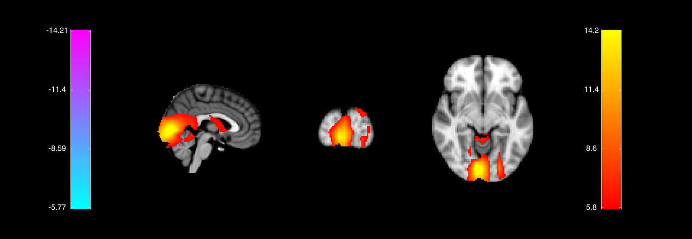
OUTPUT SUBJECT'S NIFTII FILES
The html report gives a brief summary of the results but we would like to go into more detail.
We can do this by saving the contrast of parameter estimates (COPEs) and t-statistics for each of our contrasts to NIFTI images.
S2=[];
S2.oat=oat;
S2.stats_fname=oat.first_level.results_fnames{1};
S2.first_level_contrasts=[3,1,2];
S2.resamp_gridstep=oat.source_recon.gridstep;
[statsdir,times,count]=oat_save_nii_stats(S2);
OPEN NIFTII RESULTS IN FSLVIEW
We can now view the nifti images containing our GLM results using osleyes.
o = osleyes(fullfile(statsdir,'tstat1_8mm.nii.gz'));
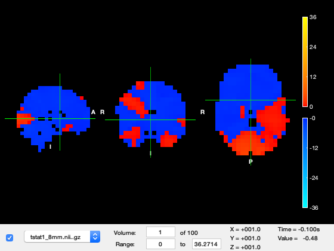 We need to tweak the viewing settings to see the results well.
Firstly, set the 'Min' and 'Max' colour limits to 15 and 25, respectively.
o.layer(2).clim = [15 25];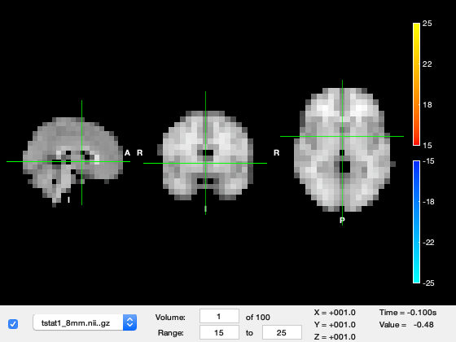
We are currently looking at the first time-point in the source_recon window which corresponds to -100ms, in which not much is happening. Change the 'Volume' to 49, which corresponds to around 100ms after stimulus onset. You should see a response in early visual cortex at the back of the brain. The time value now shows around 200ms, which is 100ms after stimulus onset.
o.layer(2).volume = 53;
o.current_point = [-9 -90 -18]; % set the location of the crosshair
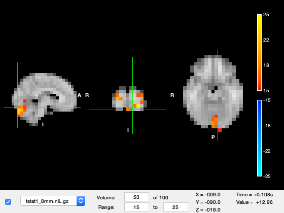 Now change the 'Volume' to 62, corresponding to around 140ms after stimulus onset. The peak of activation jumps to the right hemiphere visual cortex.
o.layer(2).volume = 62;

You can futher investigate the results by plotting the time series, by right clicking on the plot and selecting 'plot_timeseries' or using the 'plot_timeseries' method on the osleyes object. This will bring up a new window showing the t-value across time for the voxel under crosshair. The MNI coordinates are also displayed in the title of the plot. You can navigate across space by clicking on a part of the brain and time by clicking at a time-point on the timeseries.
o.plot_timeseries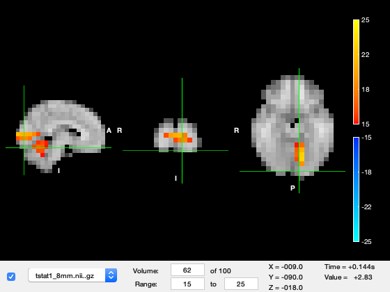 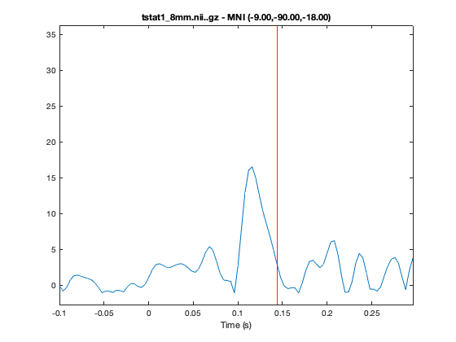
Try changing to code in the previous cell to bring up the tstats for contrast 3 'Face-Motorbikes'. Following the same visualisation instructions you should be able to see that the early time-window (Volume 49) does not contain any large responses whereas the later response (Volume 59) still occurs. This indicates that there are no large differences between Faces and Motorbikes in the the early response, whereas the later response does differ.
INVESTIGATING LOCATION OF INTEREST USING AN MNI COORDINATE
We may want to see the results across all contrasts for a single ROI to gain another perspective on our results.
Here we will interrogate the wholebrain OAT (run above) using a specified MNI coordinate.
Run the code below now. This will bring up a the COPE and tstat estimates across time for a voxel in visual cortex. Note the prominant response around 100ms
Try changing the code to run at 32,-64,-18
This corresponds to a point in Right Hemisphere Fusiform Cortex. Note that the 100ms response does not appear here, rather the later Face specific response is more dominant.
mni_coord=[4,-82,-8]; % Visual Cortex Voxel S2=[]; S2.vox_coord=mni_coord; S2.stats=oat.first_level.results_fnames{1}; S2.oat=oat; S2.first_level_cons_to_do=oat.first_level.report.first_level_cons_to_do; % plots all of these contrasts [vox_ind_used] = oat_plot_vox_stats(S2);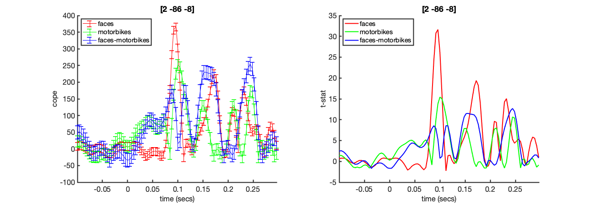
Note that this output is a combination of all of the NIFTI files that could otherwise be viewed individually using osleyes. For example, to plot just the faces tstat for the same voxel shown above, we could use
o = osleyes(fullfile(statsdir,'tstat2_8mm.nii.gz')); o.current_point = mni_coord; o.plot_timeseries; close(o.fig); % Close the volume viewer, because we only want the time series plot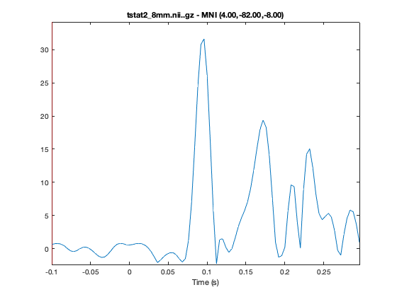
INVESTIGATING REGIONS OF INTEREST USING AN MNI MASK
In this section we will interrogate the wholebrain OAT (run above) using an ROI mask. Here we will use an MNI mask of the right temporal occipital fusiform cortex, to perform first level statistics restricted to the mask. The final result will correspond to a spatial average over the mask.
Unlike the virtual electrode, the results from many voxels (all defined in the binary mask in S2.mask_fname) are extracted and the average results across these points presented.
Apply a mask and spatially average the results over an ROI
S2=[];
S2.oat=oat;
S2.stats_fname=oat.first_level.results_fnames{1};
S2.mask_fname=fullfile(osldir,'example_data','faces_singlesubject_example','structurals','Right_Temporal_Occipital_Fusiform_Cortex_8mm.nii.gz');
[stats,times,mni_coords_used]=oat_output_roi_stats(S2);
Plot the COPEs and t-stats within the ROI
S2=[];
S2.stats=stats;
S2.oat=oat;
S2.first_level_cons_to_do=oat.first_level.report.first_level_cons_to_do; % plots all of these contrasts
[vox_ind_used] = oat_plot_vox_stats(S2);
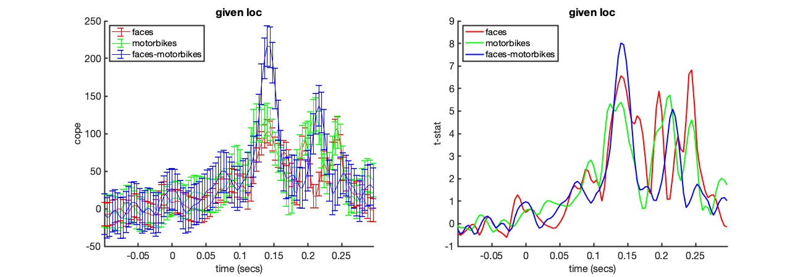 TIME-FREQUENCY ANALYSIS ACROSS A SOURCE-SPACE PARCELLATION
Often we want to interrogate neuronal responses in the frequency domain rather than the time-domain ERF. As we saw in the sensor-space practical we can extend the OAT to compute the GLM across a time-frequency decomposition of the data. Here we will extend the analysis to compute the first level GLM across a detailed time-frequency decomposition.
The GLM across the full time-frequency decomposition takes much longer to compute than the ERF or power within a single frequency band. As such we will run a time-frequency OAT across a 39 node source-space parcellation.
This has several benefits. Firstly, we can reduce noise by pooling across many voxels within a source parcel and secondly it is much faster to compute time-frequency transforms for 39 parcels than 306 Sensors or ~3500 Voxels. The details of source parcellations are covered in the ROInets practical sessions - for the moment we can consider the parcellation to be simple way to compute the OAT across many Regions of Interest at the same time.
Most of the OAT settings do not need to be changed for this analysis. We just need to define which parcellation should be applied and add the time-frequency decomposition parameters in the first level.
We are going to use the wholebrain OAT (which was run above), to make use of the settings and source_recon results already in there. The new time- frequency parameters are:
- tf_freq_range - The lower and upper bounds on the frequency range of interest
- tf_num_freqs - The number of frequency bands to estimate within the bounds in tf_freq_range
- tf_method- The spectral power estimation method
- tf_hilbert_freq_res - The resolution to use in the hilbert spectral estimation
- post_tf_downsample_factor- How much to downsample the tf results
The new parcellation parameters are defined within a oat.first_level.parcellation struct. the critical parameters are:
- parcellation - The full path to a nifti file defining the parcellation
- orthogonalisation - Option to reduce source leakage, in this case we will not apply correction
- method - method for reconstructing parcel time-course. Options are PCA, mean, peakVoxel and spatialBasis.
LOAD PREVIOUSLY RUN OAT
We are going to use the wholebrain OAT (which was run above for the ERF analysis), to make use of the settings already in there
oat.source_recon.dirname=fullfile(workingdir,'beamformer_erf'); % Make sure this matches the dirname used above oat.first_level.name=['wholebrain_first_level']; oat=osl_load_oat(oat); % Give the first level analysis a new name to avoid copying over previous % first-level analyses: oat.first_level.name=[oat.first_level.name '_parc' num2str(oat.first_level.parcellation.do)]; oat.source_recon.report.do_source_variance_maps=0; % Add first level source recon options oat.first_level.tf_freq_range=[4 30]; % frequency range in Hz oat.first_level.time_range=[-0.1 0.3]; oat.first_level.tf_num_freqs=13; oat.first_level.tf_method='morlet'; oat.first_level.post_tf_downsample_factor=1; oat.first_level.report.time_range = [.08 .22]; oat.first_level.report.first_level_cons_to_do = [2,1,3]; oat.first_level.bc=[1 1 0]; % specifies whether or not baseline correction is done for the different contrasts % Define the parameters for the parcellation oat.first_level.parcellation.do=1; % Path to the nifti defining the parcellation parcellationfile=fullfile(osldir,'example_data','faces_singlesubject_example','structurals','fmri_d100_parcellation_with_PCC_reduced_2mm_ds8mm.nii.gz'); % Define the parcellation options. oat.first_level.parcellation.parcellation=parcellationfile; oat.first_level.parcellation.orthogonalisation = 'none'; oat.first_level.parcellation.method = 'spatialBasis'; % Check and run the source_recon and first_level OAT stges oat = osl_check_oat(oat); % Rerun the first level OAT. oat.to_do=[1 1 0 0]; oat = osl_run_oat(oat);
VIEW THE RESULTS IN THE OAT REPORT
As with the other analyses, take a look at the first level summary report. Alongside the first level design matrix, this contains the COPE and t-stat estimates across the whole time-frequency decomposition from the peak ROI. The results are uniform within each parcel in the whole brain orthoplots and indicate the largest responses around 116ms after stimulus onset are in visual cortex for all three contrasts.
disp(oat.results.report.html_fname);
SOURCE ROI TIME-FREQUENCY PLOT
As with the voxel example able, we can interrogate the OAT to extract the time-frequency plots from specific contrasts.
This time the results come from the parcel containing the requested voxel.
mni_coord=[4,-82,-8]; % Visual Cortex Voxel S2=[]; S2.vox_coord=mni_coord; S2.stats=oat.first_level.results_fnames{1}; S2.oat=oat; S2.first_level_cons_to_do = [3]; % plots all of these contrasts [vox_ind_used] = oat_plot_vox_stats(S2);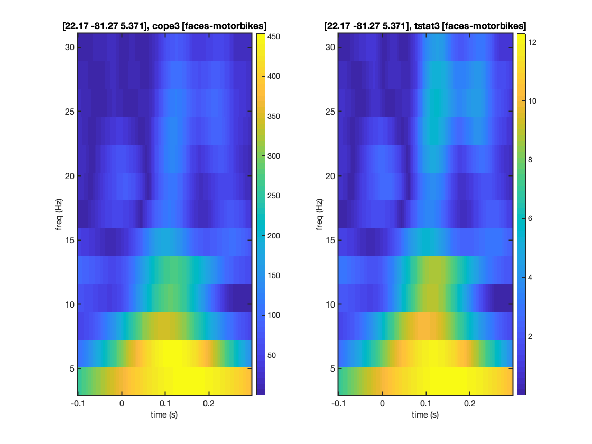
SOURCE ROI SINGLE-FREQUENCY POWER PLOT
We may also isolate the results from a single frequency by defining the freq_inds parameter. The code below will plot the OAT results over time for the 8Hz frequency band.
Note that first two contrasts in the GLM are testing whether the power at a given time and frequency is different from zero. As such the COPE and t-stats return high values, even within the pre-stimulus period. This reflects the fact that there is always some power at 8Hz, though the later time-points clearly indicate that this power is modulated by stimulus onset.
The faces-motorbikes contrast is looking for differences in power. This quantity is not strictly positive so we do see t-values around zero in the prestimulus period.
Taken together, these results indicate that there is none-zero power at 8Hz through the epoch, though it is modulated by stimulus onset, moreover faces show a greater modulation of power than motorbikes.
% Load first level results stats=oat_load_results(oat,oat.first_level.results_fnames{1}); % Define frequency of interest freqbin=nearest(stats.frequencies,8); % find bin for 8Hz % Define location of interest mni_coord=[4,-82,-8]; % Visual Cortex Voxel S2=[]; S2.vox_coord=mni_coord; S2.stats=stats; S2.oat=oat; S2.freq_inds=freqbin; S2.first_level_cons_to_do=[2,1,3]; % plots all of these contrasts [vox_ind_used] = oat_plot_vox_stats(S2);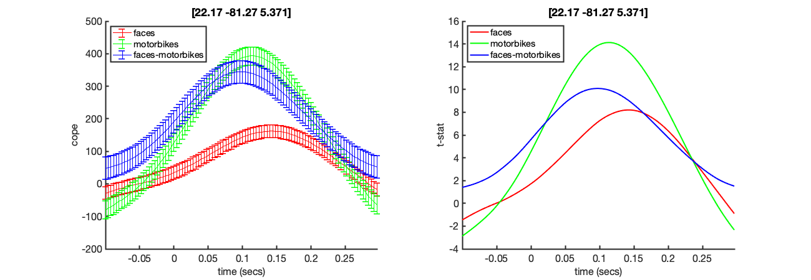